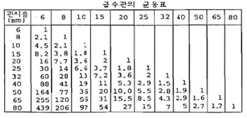
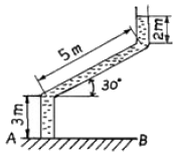
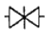
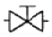
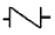
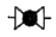
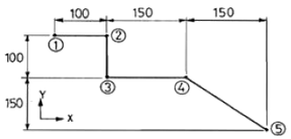
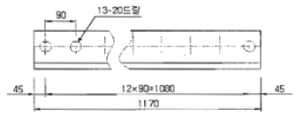
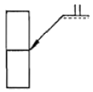
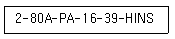

배관기능장 (2012-07-22 기출문제)
1과목: 임의구분
1. 급탕 설비 중 저장 탱크에 서머스탯을 장치한 가장 주된 이유는?
- 증기압을 측정하기 위해서
- 수량을 조절하기 위해서
- 온도를 조절하기 위해서
- 수질을 조절하기 위해서
(정답률: 89%)

2. 자동제어기기 설치 시공에 대한 설명 중 틀린 것은?
- 실내형 온도 및 습도의 검출부는 실내 온ㆍ습도의 평균치가 검출될 수 있는 장소에 설치하며, 일반사무실 등의 설치 높이는 바닥에서 1.5m 정도로 한다.
- 실내형 습도조절기 및 검출기는 피 제어체의 습도가 검출될 수 있는 장소에 설치하되, 과도한 풍속에 의해 그 성능에 변화가 없도록 보호한다.
- 온도, 습도조절기는 진동 및 물기와 먼지 등이 없는 곳에 설치한다.
- 플로우 스위치(Flow switch)는 흐름의 방향을 확인 하여 수평배관에 수평(평행)으로 설치한다.
(정답률: 74%)
3. 전기용접에서 감전의 방지대책으로 잘못된 것은?
- 용접기에는 반드시 전격 방지기를 설치한다.
- 가능한 개로전압이 높은 용접기를 사용한다.
- 용접기 내부에 함부로 손을 대지 않는다.
- 절연이 완전한 홀더를 사용한다.
(정답률: 94%)
4. 다음 중 장갑을 착용하고 작업하면 안 되는 작업은?
- 경납땜 작업
- 아크용접 작업
- 드릴 작업
- 가스절단 작업
(정답률: 94%)
5. 제어요소 중 입력 변화와 동시에 출력이 시간지연 없이 목표치에 동시에 변화하며, 시간지연이 없다는 의미에서 0차 요소라고도 하는 것은?
- 적분요소
- 일차지연요소
- 고차지연요소
- 비례요소
(정답률: 86%)
6. 추치제어에 관한 설명으로 잘못된 것은?
- 목표값의 크기나 위치가 시간의 변화에 따라 임의로 변화된다.
- 추치제어는 비율제어와 프로그램제어로 구분할 수있다.
- 2개 이상의 제어량 값이 일정한 비율관계를 유지하도록 하는 제어는 비율제어이다.
- 보일러와 냉방기 같은 냉·난방장치의 압력제어용으로 많이 이용된다.
(정답률: 69%)
7. 고압가스 배관시공 시 유의해야 할 사항으로 틀린것은?
- 배관 등의 접합부분은 가능하면 나사이음을 할 것
- 중 하중에 의해 생기는 응력에 대한 안정성이 있을 것
- 신축이 생길 우려가 있는 곳에는 신축 흡수장치를 할 것
- 관이음 방법은 가스의 최고사용압력, 관의재질, 용도 등에 따라 적합하게 선택할 것
(정답률: 94%)
8. 안개 모양으로 흘러내리는 미세한 물방울로 공기와 직접 접촉시킴으로써 여과기를 통과할 때 제거되지 않는 먼지, 매연 등을 제거하는 장치는?
- 감습기
- 공기 세정기
- 공기 냉각기
- 공기 가열기
(정답률: 89%)
9. 위생기구 설치에 대한 일반적인 설명으로 잘못된것은?
- 세면기 급수전의 위치는 일반적으로 작업자가 전방으로 서 있는 위치에서 냉수는 우측에, 온수는 좌측에 오도록 부착한다.
- 좌변기를 설치하기 위해 볼트로 변기를 바닥에 고정할 때에는 도기의 균열이나 파손에 특히 주의한다.
- 욕조(Bath)는 온수와 많이 접촉되므로 콘크리트 매설을 피한다.
- 일반가정용 좌변기에는 로우탱크식이 많이 사용되며, 급수관경은 DN25, 세정밸브는 DN32를 연결해 준다.
(정답률: 76%)
10. 시퀀스제어의 접점 회로의 논리적(AND)회로의 논리식이 A∙B = R 일 때 참값표가 틀린 것은?
- 1∙1 = 1
- 1∙0 = 0
- 0∙1 = 0
- 0∙0 = 1
(정답률: 84%)
11. 암모니아 가스의 누설위치를 찾기 위해서는 무엇을 쓰는 것이 가장 좋은가?
- 비눗물
- 알코올
- 냉각수
- 페놀프타레인
(정답률: 88%)
12. 배관작업 시 안전 수칙에 대한 설명으로 틀린 것은?
- 오일 버너를 사용할 때는 연료통이나 탱크를 부근에 놓지 않는다.
- 나사절삭 작업 시에는 관이나 공작울을 확실히 고정, 지지 후에 행한다.
- 재료는 평탄한 장소에 수평으로 놓고 경사진 장소에서는 미끄럼 방지를 한다.
- 밀폐된 용기 내에서의 도장 작업을 할 때에는 가스배출을 위해 자연 통풍을 해야 한다.
(정답률: 92%)
13. 소화설비에 관련된 설명으로 적당하지 않는 것은?
- 옥내 소화전함의 설치 높이는 바닥에서 1.5m 이하가 되도록 한다.
- 옥외소화전은 방수구(개폐장치)의 설치위치에 따라 지상식과 지하식으로 구분한다.
- 드렌처는 인접 건물에서 화재 시 연소방지를 목적으로 창문, 출입구, 처마 밑, 지붕 등에 물을 뿌리는 설비다.
- 스프링클러는 소방관이 보기 쉬운 건물외벽에 설치하며, 화재 시 실내로 압력수를 공급한다.
(정답률: 82%)
14. 주철관 코킹 작업 시 안전 수칙으로 틀린 것은?
- 납 용해 작업은 인화 물질이 없는 곳에서 행한다.
- 작업 중에는 수분이 들어가지 않는 장소를 택한다.
- 납 용융액을 취급할 때는 앞치마, 장갑 등을 반드시 착용한다.
- 납은 소켓에 한번에 주입하며, 주입전에 먼저 물을 붓고 작업한다.
(정답률: 93%)
15. 고온고압에 사용되는 화학배관의 부식 종류에 속하지 않는 것은?
- 수소에 의한 탈탄
- 암모니아에 의한 질화
- 일산화탄소에 의한 금속의 카오보닐화
- 질화수소에 의한 부식
(정답률: 73%)
16. 관의 산세정 작업에서 수세(水洗)시 사용하는 적합한 물은?
- 수돗물
- 산성수
- 묽은 황산수
- 알칼리수
(정답률: 74%)
17. 다음 용어에 대한 설명으로 잘못된 것은?
- 화상 면적 : 화격자의 면적을 말한다.
- 보일러 마력 : 1보일러 마력을 열량으로 환산하면 8462.3kcal/h 이다.
- 전열면적 : 난방용 방열기의 방열면적으로 표준방 열량은 650kcal/h이다.
- 증발량 : 단위시간에 발생하는 증기의 양을 말한다.
(정답률: 52%)
18. 25A용 2개. 20A용 3개, 15A용 2개의 급수전을 사용할 때 급수 주관의 호칭규격을 급수관의 균등표를 이용하여 산출한 것으로 맞는 것은? (단, 동시 사용률은 무시한다.)

- 32A
- 40A
- 50A
- 65A
(정답률: 77%)
19. 기송배관에서 저압송식 또는 진공식일 때, 일반적인 경우 수송물의 수송 가능거리는 몇 m 정도 인가?
- 250 ~ 300
- 500 ~ 550
- 1000 ~ 1500
- 3000 ~ 6000
(정답률: 82%)
20. 화학 세정용 약제에서 알칼리성 약제로 맞는 것은?
- 염산
- 설파인산
- 4염화탄소
- 암모니아
(정답률: 80%)
2과목: 임의구분
21. 플랜지 시트 종류 중 전면 시트(seat) 플랜지를 사용할 때 사용 가능한 호칭 압력으로 가장 적합한 것은?
- 1 kgf/cm2 이하
- 16 kgf/cm2 이하
- 40 kgf/cm2 이하
- 63 kgf/cm2 이상
(정답률: 84%)
22. 연관(鉛管)을 잘못 사용한 곳은?
- 가스배관
- 농염산, 초산의 공급배관
- 가정용 수도 인입관
- 배수관
(정답률: 76%)
23. 땅속에 매설된 수도 인입관에 설치하여 건물 안의 급수장치 전체 물의 흐름을 조절하거나 개폐할 때 사용되는 수전으로 맞는 것은?
- B형 급수전
- A형 급수전
- B형 지수전
- A형 지수전
(정답률: 66%)
24. 증기 트랩에서 오픈(open)트랩이라고도 하며, 공기가 거의 배출되지 않으므로 열동식 트랩을 병용하여 사용하는 트랩은 어느 것인가?
- 상향식 버킷 트랩
- 온도조절 트랩
- 플러시 트랩
- 충격식 트랩
(정답률: 80%)
25. 글랜드 패킹에 속하지 않는 것은?
- 플라스틱 패킹
- 메커니컬실
- 일산화연
- 메탈 패킹
(정답률: 77%)
26. 다음 중 체크밸브에 속하지 않는 것은?
- 리프트형
- 스윙형
- 풋형
- 글로브형
(정답률: 70%)
27. 다음 중 주철관을 사용하기에 부적합 한 것은?
- 수도용 급수관
- 가스 공급관
- 오배수관
- 열교환기 전열관
(정답률: 82%)
28. 350℃ 이하의 압력배관에 쓰이는 압력배관용 탄소 강관의 기호로 맞는 것은?
- SPPS
- SPPH
- STLT
- STWW
(정답률: 75%)
29. 일명 팩레스 신축 이음쇠라고도 하며, 관의 신축에 따라 슬리브와 함께 신축하는 것으로, 미끄럼 면에서 유체가 누설되는 것을 방지하는 것은?
- 루프형 신축이음쇠
- 슬리브형 신축이음쇠
- 벨로스형 신축이음쇠
- 스위블형 신축이음쇠
(정답률: 82%)
30. 배관용 타이타늄(Titanium)관에 관한 설명으로 틀린 것은?
- 내식성, 특히 내해수성이 좋다.
- 제조방법에 따라 이음매 없는 관과 용접관으로 나눈다.
- 화학장치, 석유정제장치, 펄프제지공업장치 등에 사용된다.
- 관은 안지름이 최소20㎜부터 100㎜까지 있고, 두께는 20㎜ 이상이다.
(정답률: 79%)
31. 폴리에틸렌관(Polyethylene pipe)의 장점으로 틀린것은?
- 염화비닐관보다 가볍다.
- 염화비닐관보다 화학적, 전기적 성질이 우수하다.
- 내한성이 좋아 한랭지 배관에 알맞다.
- 염화비닐관에 비해 인장강도가 크다.
(정답률: 64%)
32. 배관계의 진동이나 수격 작용에 의한 충격 등을 감쇠 또는 완화시키는 것이 주목적인 지지 장치는?
- 레스트레인트(restraint)
- 브레이스(brace)
- 서포트(support)
- 터언 버클(turn buckle)
(정답률: 84%)
33. 한쪽은 나사 이음용 니플(nipple)과 연결하고 다른 한쪽은 이음쇠의 내부에 관을 삽입하여 용접하는 동관 이음쇠의 형식은?
- Ftg×F
- Ftg×M
- C×M
- C×F
(정답률: 74%)
34. 다음 보온 피복재 중 유기질 피복재가 아닌 것은?
- 코르크
- 암면
- 기포성 수지
- 펠트
(정답률: 63%)
35. 배관접합에 관한 일반적인 설명으로 틀린 것은?
- 나사이음은 주로 저압, 저온에서 그다지 위험성이 없는 물, 공기, 저압 증기 등의 관이음에 많이 쓰인다.
- 나사 절삭가공, 취부 및 누설 등의 이유로 4B 이상의 관에서는 용접 이음이 유리하다.
- 플랜트배관용의 일반 프로세스 배관에서는 나사이 음만 한다.
- 가 조립이 끝나면 루트 간격이 맞는가, 중심 맞추기가 잘되었는가를 검사하여 수정할 곳이 있으면 수정 하여 용접한다.
(정답률: 78%)
36. 용접기를 설치하기 부적합한 장소는?
- 먼지가 없는 곳
- 비, 바람이 없는 곳
- 수증기 또는 습도가 높은 곳
- 주위 온도가 5℃인 곳
(정답률: 90%)
37. 칼라 속에 2개의 고무링을 넣고 이음 하는 방식으로 일명 고무 가스켓 이음이라고도 하며, 75 ~ 500㎜의 지름이 작은 석면시멘트관에 사용되는 이음방식인 것은?
- 심플렉스 이음
- 콤보 이음
- 노 허브 신축 이음
- 철근 콘크리트 이음
(정답률: 64%)
38. 경질 염화비닐관을 열간 삽입이음 할 때 삽입길이는 관경(D)의 몇 배 정도가 가장 적당한가?
- 1.1~1.4D
- 1.5~2.0D
- 2.1~2.4D
- 2.5~3.0D
(정답률: 84%)
39. 다음 중 용접에 해당되는 용접법은?
- 스터드 용접
- 방전충격 용접
- 심 용접
- 플래시 맞대기 용접
(정답률: 70%)
40. 아래 그림과 같은 곡관에 물이 채워져 있을 때 밑면 AB에 작용하는 수압(게이지 압)은 몇kPa 인가? (단, 중력가속도는 9.8 m/s2이다.)

- 98.0
- 91.1
- 73.5
- 68.6
(정답률: 48%)
3과목: 임의구분
41. 링크형 파이프 커터의 용도로 가장 적합한 것은?
- 주철관 절단용
- 강관 절단용
- 비금속관 절단용
- 도관 절단용
(정답률: 75%)
42. 주철관 이음 중 기계식 이음의 특징으로 틀린 것은?
- 기밀성이 좋다.
- 수중에서의 접합이 가능하다.
- 전문 숙련공이 필요하다.
- 고압에 대한 저항이 크다.
(정답률: 78%)
43. 용접작업 시 일반적인 사항을 설명한 것 중 틀린것은?
- 다층 비드 쌓기에는 덧살올림법, 케스케이드법, 전진 블록법 등이 있다.
- 냉각속도는 같은 열량을 주었을 때 열의 확산 방향이 적을수록 냉각속도가 빠르다.
- 용접입열이 일정할 경우 구리는 연강보다 냉각 속도가 빠르다.
- 주철, 고급 내열합금도 용접균열을 방지하기 위해 용접전 적당한 온도로 예열시킨다.
(정답률: 66%)
44. 배관설비의 유량 측정에 일반적으로 응용되는 원리(정리)인 것은?
- 상대성 원리
- 베르누이 정리
- 프랭크의 정리
- 아르키메데스 원리
(정답률: 89%)
45. 건포화 증기의 건도 x 는 얼마인가?
- 10
- 5
- 1
- 0.5
(정답률: 86%)
46. 굽힘 반경(banding radius)은 파이프 지름의 몇 배이상이 되어야 굴곡에 의한 물의 저항을 무시할 수 있는가?
- 1배
- 2배
- 3배
- 6배
(정답률: 70%)
47. 다음 배관 도시기호 중 게이브밸브를 표시하는 것은?




(정답률: 66%)
48. CNC 파이프 밴eld 머신으로 그림과 같이 관을 굽 히고자 한다. 프로그램을 작성하는데 ①점의 X, Y 좌표가 (0,0)일 때 ⑤점의 절대좌표는?

- (250, 300)
- (300, -250)
- (400, -250)
- (400, 250)
(정답률: 78%)
49. 4편의 마이터관(4편 엘보)을 만들려고 한다. 절단각을 구하는 식으로 맞는 것은?
- 절단각=중심각/(편수-1)×3
- 절단각=중심각/(편수-1)×2
- 절단각=편수/(중심각-1)×3
- 절단각=편수/(중심각-1)×2
(정답률: 60%)
50. 그림과 같은 도면의 지시기호 및 내용에 대한 설명으로 옳은 것은?

- 드릴 구멍의 지름은 13㎜ 이다.
- 드릴 구멍의 피치는 45㎜ 이다.
- 드릴 구멍은 13개이다.
- 드릴 구멍의 깊이는 20㎜ 이다.
(정답률: 81%)
51. 그림과 같은 용접기호를 설명한 것으로 옳은 것은?

- I형 맞대기 용접 : 화살표 쪽에 용접
- I형 맞대기 용접 : 화살표 반대쪽에 용접
- H형 맞대기 용접 : 화살표 쪽에 용접
- H형 맞대기 용접 : 화살표 반대쪽에 용접
(정답률: 75%)
52. 배관도면을 작성할 때 건물의 바닥면을 기준선으로 하여 배관장치 높이를 표시하는 기호는?
- EL
- GL
- FL
- CL
(정답률: 76%)
53. 보기와 같은 배관 라인 인덱스에서 관에 흐르는 유체의 종류는?

- 작업용 공기
- 재생 냉수
- 저압 증기
- 연료 가스
(정답률: 84%)
54. 기계제도 분야에서 가장 많이 사용되는 방법으로 보는 방향에서의 형상과 크기만 나타나고, 다른 부분은 알 수가 없기 때문에 물체 전체를 완전히 표현하려면 두 개 이상의 투상도가 필요한 것은?
- 등각투상도
- 사투상도
- 투시도
- 정투상도
(정답률: 59%)
55. 축의 완성지름, 철사의 인장강도, 아스피린 순도와 같은 데이터를 관리하는 가장 대표적인 관리도는?
- c 관리도
- nP 관리도
- u 관리도
 관리도
관리도
(정답률: 55%)
56. 로트의 크기가 시료의 크기에 비해 10배 이상 클때, 시료의 크기와 합격판정개수를 일정하게 하고 로트의 크기를 증가시킬 경우 검사특성곡선의 모양 변화에 대한 설명으로 가장 적절한 것은?
- 무한대로 커진다.
- 별로 영향을 미치지 않는다.
- 샘플링 검사의 판별 능력이 매우 좋아진다.
- 검사특성곡선의 기울기 경사가 급해진다.
(정답률: 78%)
57. 작업시간 측정방법 중 직접측정법은?
- PTS법
- 경험견적법
- 표준자료법
- 스톱워치법
(정답률: 73%)
58. 준비작업시간 100분, 개당 정미작업시간 15분, 로트 크기 20일 때 1개당 소요작업시간은 얼마인가? (단, 여유시간은 없다고 가정한다.)
- 15분
- 20분
- 35분
- 45분
(정답률: 61%)
59. 소비자가 요구하는 품질로서 설계와 판매정책에 반영되는 품질을 의미하는 것은?
- 시장품질
- 설계품질
- 제조품질
- 규격품질
(정답률: 81%)
60. 다음 중 샘플링 검사보다 전수검사를 실시하는 것이 유리한 경우는?
- 검사항목이 많은 경우
- 파괴검사를 해야 하는 경우
- 품질특성치가 치명적인 결점을 포함하는 경우
- 다수 다량의 것으로 어느 정도 부적합품이 섞여도 괜찮을 경우
(정답률: 76%)